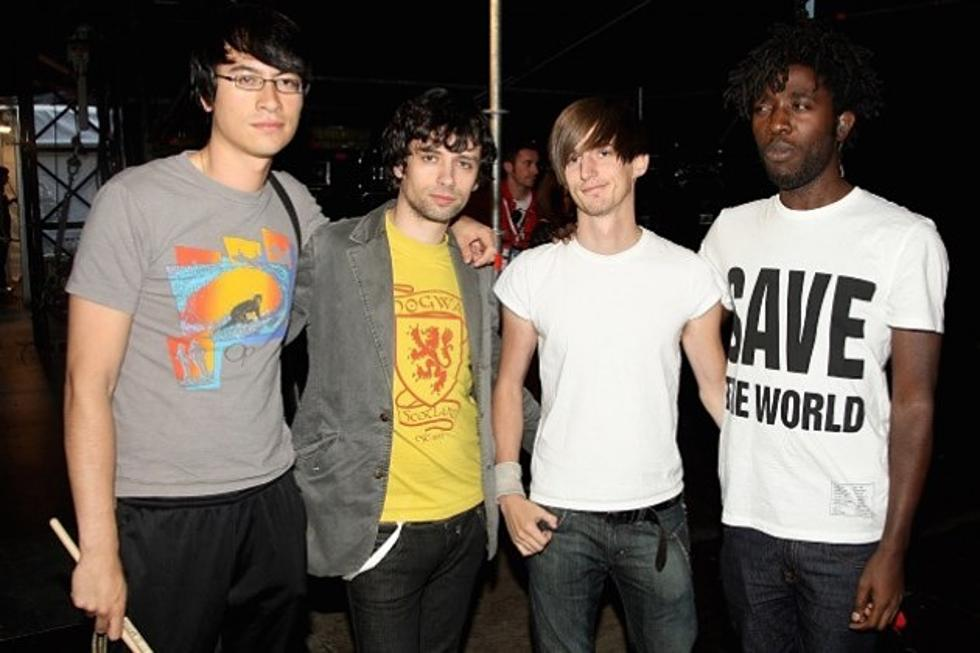

Bloc Party Home Page
Tribute Site
Intro
Bloc Party are an English rock band, composed of Kele Okereke (lead vocals, rhythm guitar, keyboards, sampler), Russell Lissack (lead guitar, keyboards), Justin Harris (bass guitar, keyboards, saxophones, backing vocals) and Louise Bartle (drums, percussion). Former members Matt Tong and Gordon Moakes left the band in 2013 and 2015 respectively. Their brand of music, whilst rooted in rock, retains elements of other genres such as electronica and house music. The band was formed at the 1999 Reading Festival by Okereke and Lissack. They went through a variety of names before settling on Bloc Party in 2003. Moakes joined the band after answering an advert in NME magazine, while Tong was picked via an audition. Bloc Party got their break by giving BBC Radio 1 DJ Steve Lamacq and Franz Ferdinand's lead singer, Alex Kapranos, a copy of their demo "She's Hearing Voices".
In February 2005, the band released their debut album Silent Alarm. It was critically acclaimed and was named Indie Album of the Year at the 2006 PLUG Awards and NME Album of the year which both honour indie music. That year, the record was also certified platinum in Britain. The band built on this success in 2007 with the release of their second studio album, A Weekend in the City, which reached a peak of number two in the UK Albums Chart and number twelve in the Billboard 200. In August 2008, Bloc Party released their third studio record, Intimacy which entered the UK Albums Chart at number eight and number eighteen on the Billboard 200. The band went on a hiatus in October 2009 to focus on side projects. They reunited in September 2011, and shortly thereafter released their fourth album, Four, which entered the UK Albums Chart at number three. In 2013, Bloc Party released their third EP titled The Nextwave Sessions in August; the band then began an indefinite hiatus to continue with their respective side projects. The band's fifth studio album, Hymns, the first to involve Harris and Bartle, was released on 29 January 2016. Bloc Party have sold over 3 million albums worldwide.[1]